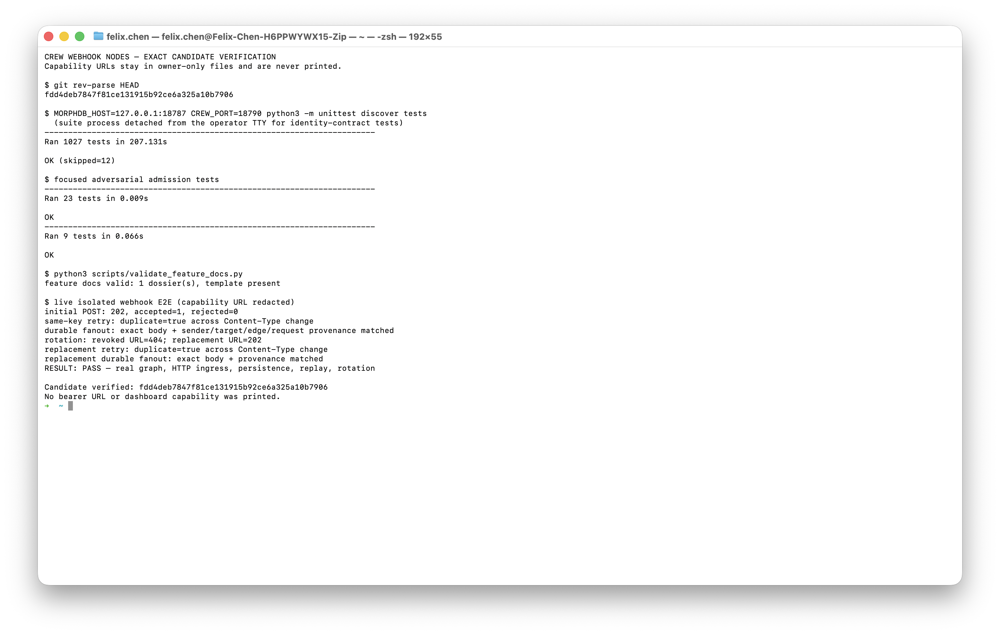
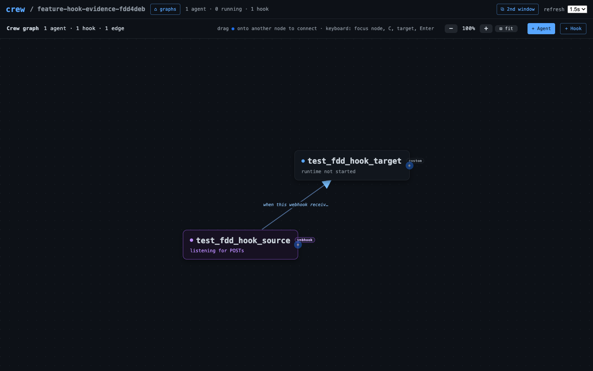

Control and delivery stay separate
- The operator configures topology through authenticated controls.
- The caller's secret URL authorizes only one hook invocation.
- Crew parses once and freezes the outgoing edge set.
- Each edge independently accepts or rejects a durable message.
Safe by construction
Credential headers never enter templates. Unknown capabilities are
rejected before body read. Public failures cannot leak private backend
diagnostics.
Provider retry friendly
Recognized delivery IDs are hashed. The receipt freezes message text
and exact route identities; stable per-edge request IDs prevent
duplicates without redirecting an old payload.
Uses Crew's mail gate
Existing edge identity checks, budgets, transforms, provenance, and
FIFO delivery apply without a second messaging system.
Deliberately local
CREW_WEBHOOK_PUBLIC_BASE_URL changes display only. Managed
Internet access belongs to the stacked public-ingress feature.
Verified on the real candidate
The browser recording demonstrates the actual UI flow. The Terminal capture is the decisive assertion: it shows the tested SHA, the 1,027-test result, public HTTP response, persisted message provenance, idempotent retry, and capability rotation. Bearer URLs and dashboard authentication are omitted from every asset.


Open the self-contained published explainer for the same evidence in a shareable view.